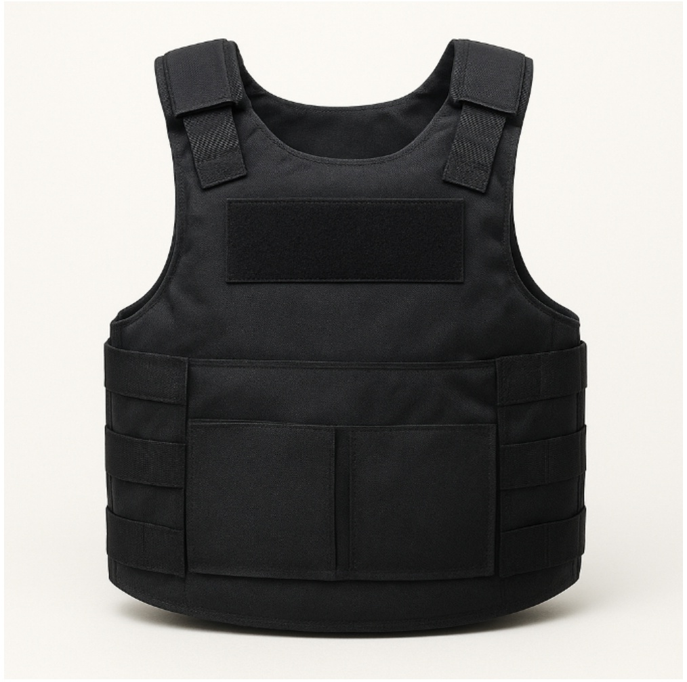

Our Innovations

Velomobile
The Velomobile project by Gifzer Innovations focuses on developing a lightweight, aerodynamic, and eco-friendly human-powered vehicle. Designed for efficiency and sustainability, it integrates engineering creativity with green technology, promoting clean mobility solutions that contribute to a healthier and smarter future.

Bullet Proof Jacket
Gifzer’s Bullet Proof Jacket project aims to design advanced protective gear using innovative composite materials. Engineered for strength, comfort, and reduced weight, it enhances personal safety for defense and security personnel while showcasing India’s progress in indigenous research and material innovation.